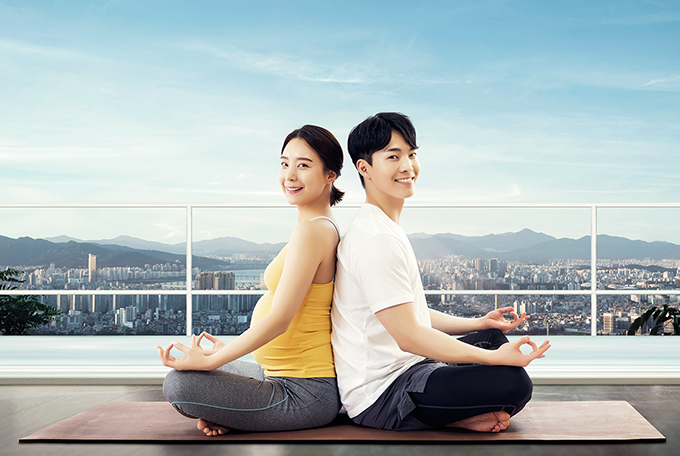
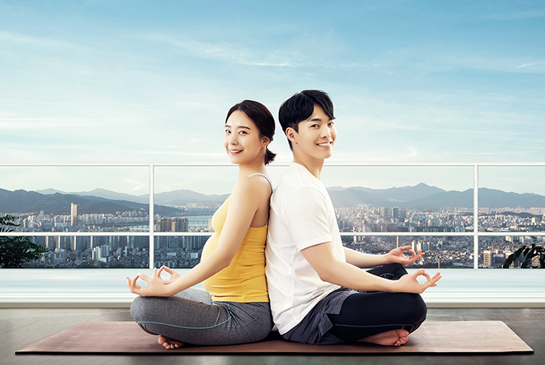

Wellness
- Home
- Investment Environment
- Promising Industries
- Wellness
 

Modern people, who are exposed to a great deal of stress and different diseases, are increasingly interested in healing and healthcare, and the size and value of the global wellness market continues to grow.
Jeju Island has developed outstanding facilities for high-quality medical services including, forest healing, beauty and anti-aging, aesthetics and spa, healing and meditation, and fitness and leisure, based on its pristine natural environment and excellent tourism infrastructure, and promoted the food ingredient production and processing industry based on primary industries.
The island, which has driven a healthy lifestyle among Korean consumers, is an ideal location for investment in the wellness tourism industry as it is located just one-hour away from both China and Japan, which have Asia’s largest silver economies and healthcare markets.
Furthermore, the Special Act on the Establishment of Jeju Special Self-Governing Province and the Development of the Free International City allows foreign corporations to establish medical institutions in Jeju. Healthcare town Healing Hills, developed by JDC and located in Seogwipo City, is attracting investment with an aim to become a world-class medical tourism complex.
Jeju’s wellness resources help relieve stress, cure diseases and enhance emotional stability, and provide the best possible experiences for seekers of health and healing from around the world.

Healthcare and Recreation Industries Enhancing the Value Added of Jeju
-
Healing Resources
- World Natural Heritage “Triple Crown” designation
- Forest land taking up 47% of the entire island
- Mild climate with average low/high temperatures of 13.9℃/19.9℃
- 500km of ecological trails
- Natural recreational forests covering an area of 1,149 ha
- Ramsar wetlands covering an area of 2.81km2
- Hallasan National Park
-
Tourism Industry
- For-profit hospitals
- Healthcare town resorts
- KRW 5.7 trillion in annual tourism income (as of 2017)
- Annual average 15 million visitors
- Korea’s best tourist attraction (based on a big data analysis by the Korea Tourism Organization and the Ministry of Culture, Sports and Tourism, as of 2018)
-
Healthcare & Beauty Industry
- Healthcare facilities
- Premium spa facilities
- Fitness facilities
- Meditation facilities
- Production of Environment-friendly Agricultural & Fishery Products(Manufacturing of health foods, Manufacturing of organic foods, Manufacturing of cosmetics)

Jeju’s Wellness Resources

-
1 national park
153.332 ㎢[Website]https://www.jeju.go.kr/hallasan/index.htm -
1 provincial park
1,546,757 ㎢[Website]http://jejugotjawal.or.kr/ -
13 tourist attractions in Jeju Geopark
13 tourist
-
4 natural recreational forests
1,085 ㏊ -
1 ecological forest
194 ㏊ -
1 healing forest (Seogwipo Healing Forest)
174 ㏊
-
4 provincial marine parks
180.74 ㎢[Website]http://jejugotjawal.or.kr/
http://www.jeju.go.kr/dorip/chuja.htm
http://www.jeju.go.kr/dorip/mara.htm
http://www.jeju.go.kr/dorip/seongsan.htm

-
10 beaches
10 beaches